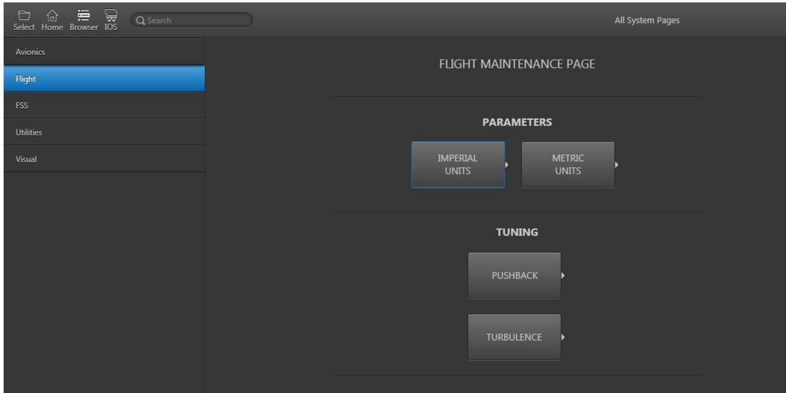

1.3 维护页面（Maintenance Pages）
对应原始手册：## 12. Maintenance Pages
一、功能层级与界面总览
工作区入口说明：维护页面（Maintenance Pages）是 IOS 的一个独立工作区，并非弹窗。教员需通过控制面板底部页脚（1.2.7）最右侧的 Workspace 按钮打开工作区切换菜单，选择「Maintenance / 维护」进入本界面。进入后，当前显示器将切换为维护页面主视图。
1.1 功能层级结构
本章为单一功能页面，无内部功能层级划分。
1.2 界面结构
| 区域/控件 | 位置 | 功能说明 |
|---|---|---|
| 维护页面主视图 Maintenance Pages Main View |
占据整个当前显示器工作区 | 为维护人员提供执行模拟器维护任务的专用界面 |
| 工作区切换按钮 Workspace Button |
控制面板底部页脚右侧 | 教员可通过点击该按钮并选择「维护」进入本工作区（详见 1.2.7 控制面板底部） |

图 1：控制面板底部总览（Control Board Footer）

图 2：工作区卷展菜单（Workspace Roll Up Menu）

图 3：维护页面主视图（Maintenance Pages）
访问限制说明：维护页面仅供维护人员使用，教员在日常训练场景中通常不需要进入该工作区。页面内容取决于 IOS 配置和模拟器型号。
二、核心功能详解
2.1 维护页面属性总览
| 属性 | 说明 |
|---|---|
| 功能定义 | 为维护人员提供的专用工作区，用于执行各类模拟器维护任务 |
| 呈现方式 | 全屏工作区页面，替换当前显示器中的控制面板视图 |
| 用户权限 | 仅供维护人员使用，教员日常训练中无需访问 |
| 配置依赖 | 页面具体内容和可用维护任务取决于 IOS 配置及模拟器硬件型号 |
| 边界行为 | 进入维护页面后，常规训练控制功能被隐藏；完成维护后需手动切换回训练工作区 |
三、全局操作流程与推导
3.1 维护页面访问操作流程全景图
flowchart LR
Start([进入 IOS 训练系统]) --> NeedMaint{需要执行
维护任务?} NeedMaint -->|是| OpenFooter[点击 Workspace
工作区按钮] NeedMaint -->|否| ContinueTraining[继续训练] ContinueTraining --> EndTrain([训练继续]) OpenFooter --> SelectMaint{选择
Maintenance} SelectMaint -->|维护| EnterMaint[切换至
维护页面] SelectMaint -->|其他工作区| SwitchOther[进入其他
工作区] SwitchOther --> EndSwitch([工作区切换完成]) EnterMaint --> PerformTask[执行维护任务] PerformTask --> Complete{维护完成?} Complete -->|是| ReturnWorkspace[切换回
训练工作区] Complete -->|否| PerformTask ReturnWorkspace --> EndMaint([维护流程结束]) style Start fill:#dbeafe,stroke:#2563eb,stroke-width:2px style EndTrain fill:#d1fae5,stroke:#059669,stroke-width:2px style EndMaint fill:#d1fae5,stroke:#059669,stroke-width:2px style EndSwitch fill:#d1fae5,stroke:#059669,stroke-width:2px style EnterMaint fill:#fee2e2,stroke:#dc2626,stroke-width:2px
维护任务?} NeedMaint -->|是| OpenFooter[点击 Workspace
工作区按钮] NeedMaint -->|否| ContinueTraining[继续训练] ContinueTraining --> EndTrain([训练继续]) OpenFooter --> SelectMaint{选择
Maintenance} SelectMaint -->|维护| EnterMaint[切换至
维护页面] SelectMaint -->|其他工作区| SwitchOther[进入其他
工作区] SwitchOther --> EndSwitch([工作区切换完成]) EnterMaint --> PerformTask[执行维护任务] PerformTask --> Complete{维护完成?} Complete -->|是| ReturnWorkspace[切换回
训练工作区] Complete -->|否| PerformTask ReturnWorkspace --> EndMaint([维护流程结束]) style Start fill:#dbeafe,stroke:#2563eb,stroke-width:2px style EndTrain fill:#d1fae5,stroke:#059669,stroke-width:2px style EndMaint fill:#d1fae5,stroke:#059669,stroke-width:2px style EndSwitch fill:#d1fae5,stroke:#059669,stroke-width:2px style EnterMaint fill:#fee2e2,stroke:#dc2626,stroke-width:2px
3.2 工作区切换通用状态机
stateDiagram-v2
[*] --> 训练工作区
训练工作区 --> 工作区菜单打开中 : 点击Workspace按钮
工作区菜单打开中 --> 维护页面 : 选择Maintenance
工作区菜单打开中 --> 训练工作区 : 点击外部取消
工作区菜单打开中 --> 其他工作区 : 选择其他选项
维护页面 --> 维护任务执行中 : 开始维护操作
维护任务执行中 --> 维护页面 : 完成或取消当前任务
维护页面 --> 训练工作区 : 切换回训练工作区
其他工作区 --> 训练工作区 : 切换回训练工作区
训练工作区 --> [*]
状态说明
| 状态 | 说明 |
|---|---|
| 训练工作区 | 教员进行训练控制的常规状态，显示控制面板、地图等工作区之一 |
| 工作区菜单打开中 | 点击 Workspace 按钮后，弹出工作区选择菜单的临时状态 |
| 维护页面 | 当前显示器显示维护页面的专用界面 |
| 维护任务执行中 | 维护人员正在使用维护页面执行具体维护操作 |
| 其他工作区 | 教员切换到地图、课程计划剖面、仪表复示器或高级等工作区 |
3.3 关联依赖与异常边界
3.3.1 关联依赖
| 关联项 | 依赖关系 |
|---|---|
| Control Board Footer / 控制面板底部 | 强依赖：维护页面通过页脚的 Workspace 按钮进入，无独立入口 |
| IOS 配置 | 强依赖：维护页面的具体内容和可用任务由 IOS 配置文件决定 |
| 模拟器硬件 | 弱依赖：不同模拟器型号的维护任务可能不同 |
| Lesson Plan / 课程计划 | 互斥：进入维护页面会中断当前训练会话的交互界面 |
3.3.2 异常边界
| 场景 | 行为 |
|---|---|
| 训练过程中误进入维护页面 | 当前训练控制界面被替换，但模拟器运行状态通常不会自动终止；需手动切回控制面板继续训练 |
| 维护页面未在当前 IOS 配置中启用 | Workspace 菜单中可能不显示 Maintenance 选项，或显示为禁用状态 |
| 当前课程正在进行时切换 | 课程计划可能继续在后台运行，但教员无法通过维护页面监控课程状态 |
3.4 数据流与开发流程推导
3.4.1 数据流
教员点击 Workspace 按钮
↓
Workspace 菜单状态变更（UI 事件）
↓
选择 Maintenance
↓
IOS 工作区管理器切换当前显示器上下文
↓
加载维护页面 UI 组件与维护任务接口
↓
渲染维护页面主视图
3.4.2 API 接口契约建议
| 接口 | 方法 | 请求/响应 | 说明 |
|---|---|---|---|
| 切换工作区 | POST /api/v1/workspace/switch | 请求：{ workspace: "maintenance" } 响应：{ success: true, currentWorkspace: "maintenance" } |
切换当前显示器到指定工作区 |
| 获取可用工作区列表 | GET /api/v1/workspace/list | 响应：[{ id, name, enabled, icon }] | 返回当前 IOS 配置下可用的工作区 |
| 获取维护任务列表 | GET /api/v1/maintenance/tasks | 响应：[{ id, name, category, requiredRole }] | 返回当前用户权限下可执行的维护任务 |
四、测试要点
| 测试类型 | 测试场景 | 期望结果 |
|---|---|---|
| 正向路径 | 从控制面板点击 Workspace → 选择 Maintenance | 当前显示器成功切换为维护页面，页面加载无报错 |
| 正向路径 | 从维护页面切换回 Control Board | 成功返回控制面板，训练状态保持正常 |
| 异常路径 | IOS 配置未启用维护页面 | Workspace 菜单中 Maintenance 选项隐藏或禁用 |
| 异常路径 | 课程执行过程中切换至维护页面 | 模拟器不崩溃，课程状态不丢失，切回后可继续 |
| 边界条件 | 所有工作区来回切换 | 状态上下文正确保留，无内存泄漏或 UI 残留 |
| 权限测试 | 非维护人员角色尝试访问维护任务 | 维护任务列表为空或接口返回 403 |
五、变更记录
| 日期 | 版本 | 变更内容 |
|---|---|---|
| 2026-06-05 | V1.0 | 初始生成 1.3 维护页面 HTML，包含功能层级图、界面结构、操作流程、状态机与测试要点；配图来自原始手册 Figure 108 |